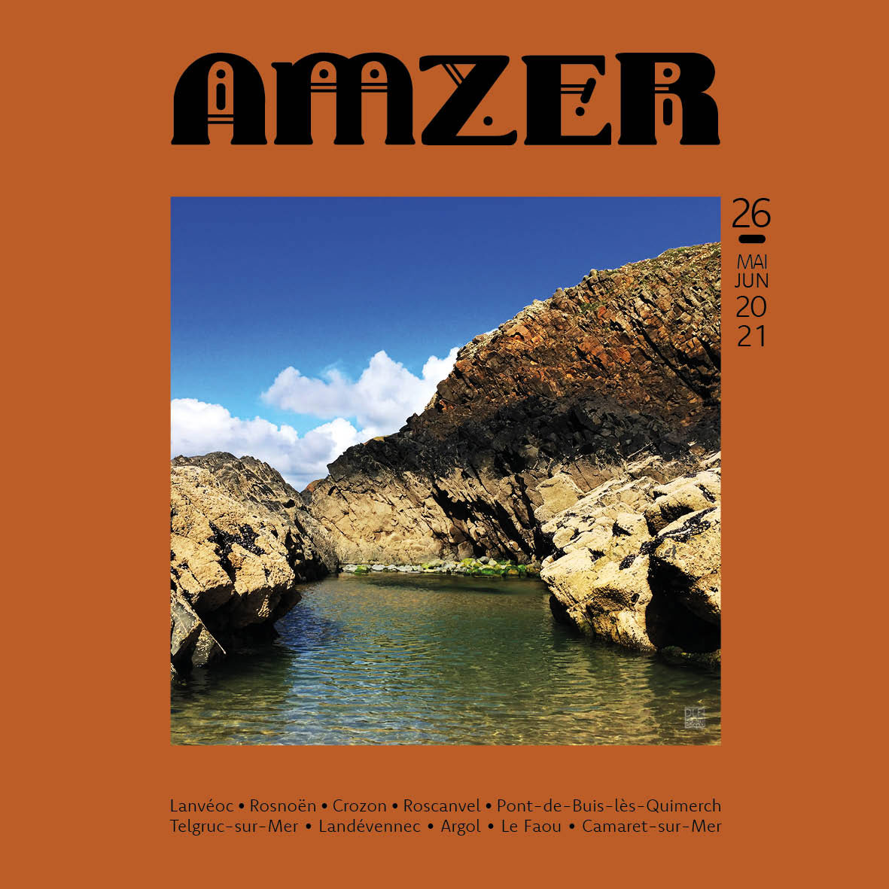

Ce site est en cours de construction. En attendant...
Découvrez Amzer n°26 - Majuin 2021

Pour lire la version numérique, c'est par
là
Édito - Dañs
« J’ai tendu des cordes de clocher à clocher, des guirlandes de fenêtre à fenêtre ; des chaînes d’or d’étoile à étoile,
et je danse. »
Nul besoin de longues phrases pour faire accélérer le cœur et faire briller les yeux d’une lueur plus intense.
Avec quelques mots, donner envie de chanter sous la pluie, d’admirer l’océan, le soleil qui s’endort en le frôlant ; de
fermer les yeux pour se laisser bercer par le chant des oiseaux et le bruit des nuages ; de croquer une fraise les pieds
dans l’herbe fraîche…
Tranquillement, ouvrir grand portes et fenêtres et laisser la lumière entrer dans les moindres coins du logis, dans les
moindres recoins de la vie.
Absorber ces sons qui résument la quintessence du monde tel que nous voudrions qu’il soit.
Emerveillés par les poètes qui font rêver nos âmes, tout particulièrement Arthur Rimbaud, avec ces quelques mots.
Libre à nous maintenant d’allumer les guirlandes et de danser encore…